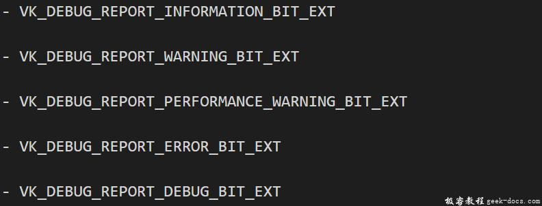

Vulkan 验证层，Vulkan API的设计核心是尽量最小化驱动程序的额外开销，所谓额外开销更多的是指向渲染以外的运算。其中一个具体的表现就是默认条件下，Vulkan API的错误检查的支持非常有限。即使遍历不正确的值或者将需要的参数传递为空指针，也不会有明确的处理逻辑，并且直接导致崩溃或者未定义的异常行为。之所以这样，是因为Vulkan要求每一个步骤定义都非常明确，导致很容易造成小错误，例如使用新的GPU功能，但是忘记了逻辑设备创建时请求它。
什么是验证层
但是，这并不意味着这些检查不能添加到具体的API中。Vulkan推出了一个优化的系统，这个系统称之为Validation layers。Validation layers是可选组件，可以挂载到Vulkan函数中调用，以回调其他的操作。Validation layers的常见操作情景有:
- 根据规范检查参数数值，最终确认是否存与预期不符的情况
- 跟踪对象的创建和销毁，以查找是否存在资源的泄漏
- 跟踪线程的调用链，确认线程执行过程中的安全性
- 将每次函数调用所使用的参数记录到标准的输出中，进行初步的Vulkan概要分析
以下示例代码是一个函数中应用Validation layers的具体实现:
VkResult vkCreateInstance(
const VkInstanceCreateInfo* pCreateInfo,
const VkAllocationCallbacks* pAllocator,
VkInstance* instance) { if (pCreateInfo == nullptr || instance == nullptr) {
log("Null pointer passed to required parameter!");
return VK_ERROR_INITIALIZATION_FAILED;
} return real_vkCreateInstance(pCreateInfo, pAllocator, instance);
}
这些Validation layers可以随意的堆叠到Vulkan驱动程序中，如果有必要，你甚至可以包含所有的debug功能。可以简单的开启Validation layers的debug版本，并在release版本中完全禁止，从而为您提供理想的两个版本。
Vulkan没有内置任何Validation layers，但是LunarG Vulkan SDK提供了一系列layers用于检测常规的错误异常。他们是完全OpenSource的，所以你可以根据你需要的检测需求应用具体的Validation layers。使用Validation layers是最佳的方式避免你的应用程序在发生未知的行为时收到影响，甚至中断。
Vulkan只能使用已经安装到系统上下文的Validation layers。例如，LunarG Validation layers仅在安装了Vulkan SDK的PC上可用。
在之前的Vulkan版本中有两种不同类型的Validation layers，分别应用于 instance 和 device specific。这个设计理念希望instance层只会验证与全局Vulkan对象(例如Instance)有关的调用，而device specific层只是验证与特定GPU相关的调用。device specific层已经被废弃，这意味着instance层的Validation layers将应用所有的Vulkan调用。出于兼容性的考虑，规范文档仍然建议在device specific层开启Validation layers，这在某些情景下是有必要的。我们将在logic device层指定与instance相同的Validation layers,稍后会看到。
使用验证层
在本节中，我们将介绍如何启用Vulkan SDK提供的标准诊断层。就像扩展一样，需要通过指定具体名称来开启validation layers。SDK通过请求VK_LAYER_LUNARG_standard_validaction层，来隐式的开启有所关于诊断layers，从而避免明确的指定所有的明确的诊断层。
首先在程序中添加两个配置变量来指定要启用的layers以及是否开启它们。我们选择基于程序是否在调试模式下进行编译。NDEBUG是C++标准宏定义，代表“不调试”。
const int WIDTH = 800;
const int HEIGHT = 600;const std::vector<const char*> validationLayers = {
"VK_LAYER_LUNARG_standard_validation"
};#ifdef NDEBUG
const bool enableValidationLayers = false;
#else
const bool enableValidationLayers = true;
#endif
我们将添加一个新的函数checkValidationLayerSupport,检测所有请求的layers是否可用。首先使用vkEnumerateInstanceLayerProperties函数列出所有可用的层。其用法与vkEnumerateInstanceExtensionProperties相同，在Instance小节中讨论过。
bool checkValidationLayerSupport() {
uint32_t layerCount;
vkEnumerateInstanceLayerProperties(&layerCount, nullptr); std::vector<VkLayerProperties> availableLayers(layerCount);
vkEnumerateInstanceLayerProperties(&layerCount, availableLayers.data()); return false;
}
接下来检查validationLayers中的所有layer是否存在于availableLayers列表中。我们需要使用strcmp引入
for (const char* layerName : validationLayers) {
bool layerFound = false; for (const auto& layerProperties : availableLayers) {
if (strcmp(layerName, layerProperties.layerName) == 0) {
layerFound = true;
break;
}
} if (!layerFound) {
return false;
}
}return true;
现在我们在createInstance函数中使用:
void createInstance() {
if (enableValidationLayers && !checkValidationLayerSupport()) {
throw std::runtime_error("validation layers requested, but not available!");
} ...
}
现在以调试模式运行程序，并确保不会发生错误。如果发生错误，请确保正确安装Vulkan SDK。如果没有或者几乎没有layers上报，建议使用最新的SDK，或者到LunarG官方寻求帮助,需要注册帐号。
最终，修改VkInstanceCreateInfo结构体，填充当前上下文已经开启的validation layers名称集合。
if (enableValidationLayers) {
createInfo.enabledLayerCount = static_cast<uint32_t>(validationLayers.size());
createInfo.ppEnabledLayerNames = validationLayers.data();
} else {
createInfo.enabledLayerCount = 0;
}
如果检查成功，vkCreateInstance不会返回VK_ERROR_LAYER_NOT_PRESENT错误，请确保程序运行正确无误。
消息回调
比较遗憾的是单纯开启validation layers是没有任何帮助的，因为到现在没有任何途径将诊断信息回传给应用程序。要接受消息，我们必须设置回调，需要VK_EXT_debug_report扩展。
我们新增一个getRequiredExtensions函数，该函数将基于是否开启validation layers返回需要的扩展列表。
std::vector<const char*> getRequiredExtensions() {
std::vector<const char*> extensions; unsigned int glfwExtensionCount = 0;
const char** glfwExtensions;
glfwExtensions = glfwGetRequiredInstanceExtensions(&glfwExtensionCount); for (unsigned int i = 0; i < glfwExtensionCount; i++) {
extensions.push_back(glfwExtensions[i]);
} if (enableValidationLayers) {
extensions.push_back(VK_EXT_DEBUG_REPORT_EXTENSION_NAME);
} return extensions;
}
GLFW的扩展总是需要的，而debug report扩展是根据编译条件添加。与此同时我们使用VK_EXT_DEBUG_REPORT_EXTENSION_NAME宏定义，它等价字面值 “VK_EXT_debug_report”，使用宏定义避免了硬编码。
我们在createInstance函数中调用:
auto extensions = getRequiredExtensions();
createInfo.enabledExtensionCount = static_cast<uint32_t>(extensions.size());
createInfo.ppEnabledExtensionNames = extensions.data();
运行程序确保没有收到VK_ERROR_EXTENSION_NOT_PRESENT错误信息，我们不需要去验证扩展是否存在，因为它会被有效的validation layers引擎的验证。
现在让我们看一下callback函数的样子，添加一个静态函数debugCallback,并使用PFN_vkDebugReportCallbackEXT 原型进行修饰。VKAPI_ATTR和VKAPI_CALL确保了正确的函数签名，从而被Vulkan调用。
static VKAPI_ATTR VkBool32 VKAPI_CALL debugCallback(
VkDebugReportFlagsEXT flags,
VkDebugReportObjectTypeEXT objType,
uint64_t obj,
size_t location,
int32_t code,
const char* layerPrefix,
const char* msg,
void* userData) { std::cerr << "validation layer: " << msg << std::endl; return VK_FALSE;
}
函数的第一个参数指定了消息的类型，它可以通过一下任意标志位组合:

objType参数描述作为消息主题的对象的类型，比如一个obj是VkPhysicalDevice，那么objType就是VK_DEBUG_REPORT_OBJECT_TYPE_DEVICE_EXT。这样做被允许是因为Vulkan的内部句柄都被定义为uint64_t。msg参数包含指向消息的指针。最后，有一个userData参数可将自定义的数据进行回调。
回调返回一个布尔值，表明触发validation layer消息的Vulkan调用是否应被中止。如果返回true，则调用将以VK_ERROR_VALIDATION_FAILED_EXT错误中止。这通常用于测试validation layers本身，所以我们总是返回VK_FALSE。
现在需要告知Vulkan关于定义的回调函数。也许你会比较惊讶，即使是debug 回调也需要一个明确的创建和销毁句柄的管理工作。添加一个类成员存储回调句柄，在instance下。
VkDebugReportCallbackEXT callback;
现在添加一个函数setupDebugCallback,该函数会在initVulkan函数 调用createInstance之后调用。
void initVulkan() {
createInstance();
setupDebugCallback();
}void setupDebugCallback() {
if (!enableValidationLayers) return;}
现在我们填充有关回调的结构体详细信息:
VkDebugReportCallbackCreateInfoEXT createInfo = {};
createInfo.sType = VK_STRUCTURE_TYPE_DEBUG_REPORT_CALLBACK_CREATE_INFO_EXT;
createInfo.flags = - VK_DEBUG_REPORT_ERROR_BIT_EXT | - VK_DEBUG_REPORT_WARNING_BIT_EXT;
createInfo.pfnCallback = debugCallback;
标志位允许过滤掉你不希望的消息。pfnCallback字段描述了回调函数的指针。在这里可以有选择的传递一个pUserData指针，最为回调的自定义数据结构使用，比如可以传递HelloTriangleApplication类的指针。
该结构体应该传递给vkCreateDebugReportCallbackEXT函数创建VkDebugReportCallbackEXT对象。不幸的是，因为这个功能是一个扩展功能，它不会被自动加载。所以必须使用vkGetInstanceProcAddr查找函数地址。我们将在后台创建代理函数。在HelloTriangleApplication类定义之上添加它。
VkResult CreateDebugReportCallbackEXT(VkInstance instance, const VkDebugReportCallbackCreateInfoEXT* pCreateInfo, const VkAllocationCallbacks* pAllocator, VkDebugReportCallbackEXT* pCallback) {
auto func = (PFN_vkCreateDebugReportCallbackEXT) vkGetInstanceProcAddr(instance, "vkCreateDebugReportCallbackEXT");
if (func != nullptr) {
return func(instance, pCreateInfo, pAllocator, pCallback);
} else {
return VK_ERROR_EXTENSION_NOT_PRESENT;
}
}
如果函数无法加载，则vkGetInstanceProcAddr函数返回nullptr。如果非nullptr，就可以调用此函数来创建扩展对象:
if (CreateDebugReportCallbackEXT(instance, &createInfo, nullptr, &callback) != VK_SUCCESS) {
throw std::runtime_error("failed to set up debug callback!");
}
倒数第二个参数仍然是分配器回调指针，我们仍然设置为nullptr。debug回调与Vulkan instance和layers相对应，所以需要明确指定第一个参数。现在运行程序，关闭窗口，你会在命令行看到提示信息:
validation layer: Debug Report callbacks not removed before DestroyInstance
现在Vulkan已经在程序中发现了一个错误!需要通过调用vkDestroyDebugReportCallbackEXT清理VkDebugReportCallbackEXT对象。与vkCreateDebugReportCallbackEXT类似，该函数需要显性的加载。在CreateDebugReportCallbackEXT下创建另一个代理函数。
void DestroyDebugReportCallbackEXT(VkInstance instance, VkDebugReportCallbackEXT callback, const VkAllocationCallbacks* pAllocator) {
auto func = (PFN_vkDestroyDebugReportCallbackEXT) vkGetInstanceProcAddr(instance, "vkDestroyDebugReportCallbackEXT");
if (func != nullptr) {
func(instance, callback, pAllocator);
}
}
该函数定义为类静态函数或者外部函数，我们在cleanup函数中进行调用:
void cleanup() {
DestroyDebugReportCallbackEXT(instance, callback, nullptr);
vkDestroyInstance(instance, nullptr); glfwDestroyWindow(window); glfwTerminate();
}
再次运行程序，会看到错误信息已经消失。如果要查看哪个调用触发了一条消息，可以向消息回调添加断点，并查看堆栈调用链。
配置
Validation layers的行为可以有更多的设置，不仅仅是VkDebugReportCallbackCreateInfoEXT结构中指定的标志位信息。浏览Vulkan SDK的Config目录。找到vk_layer_settings.txt文件，里面有说明如何配置layers。
要为自己的应用程序配置layers，请将文件赋值到项目的Debug和Release目录，然后按照说明设置需要的功能特性。除此之外，本教程将使用默认的设置。
源代码
// validation_layers.cpp
#define GLFW_INCLUDE_VULKAN
#include <GLFW/glfw3.h>#include <iostream>
#include <stdexcept>
#include <vector>
#include <cstring>
#include <cstdlib>const int WIDTH = 800;
const int HEIGHT = 600;const std::vector<const char*> validationLayers = {
"VK_LAYER_KHRONOS_validation"
};#ifdef NDEBUG
const bool enableValidationLayers = false;
#else
const bool enableValidationLayers = true;
#endifVkResult CreateDebugUtilsMessengerEXT(VkInstance instance, const VkDebugUtilsMessengerCreateInfoEXT* pCreateInfo, const VkAllocationCallbacks* pAllocator, VkDebugUtilsMessengerEXT* pDebugMessenger) {
auto func = (PFN_vkCreateDebugUtilsMessengerEXT) vkGetInstanceProcAddr(instance, "vkCreateDebugUtilsMessengerEXT");
if (func != nullptr) {
return func(instance, pCreateInfo, pAllocator, pDebugMessenger);
} else {
return VK_ERROR_EXTENSION_NOT_PRESENT;
}
}void DestroyDebugUtilsMessengerEXT(VkInstance instance, VkDebugUtilsMessengerEXT debugMessenger, const VkAllocationCallbacks* pAllocator) {
auto func = (PFN_vkDestroyDebugUtilsMessengerEXT) vkGetInstanceProcAddr(instance, "vkDestroyDebugUtilsMessengerEXT");
if (func != nullptr) {
func(instance, debugMessenger, pAllocator);
}
}class HelloTriangleApplication {
public:
void run() {
initWindow();
initVulkan();
mainLoop();
cleanup();
}private:
GLFWwindow* window; VkInstance instance;
VkDebugUtilsMessengerEXT debugMessenger; void initWindow() {
glfwInit(); glfwWindowHint(GLFW_CLIENT_API, GLFW_NO_API);
glfwWindowHint(GLFW_RESIZABLE, GLFW_FALSE); window = glfwCreateWindow(WIDTH, HEIGHT, "Vulkan", nullptr, nullptr);
} void initVulkan() {
createInstance();
setupDebugMessenger();
} void mainLoop() {
while (!glfwWindowShouldClose(window)) {
glfwPollEvents();
}
} void cleanup() {
if (enableValidationLayers) {
DestroyDebugUtilsMessengerEXT(instance, debugMessenger, nullptr);
} vkDestroyInstance(instance, nullptr); glfwDestroyWindow(window); glfwTerminate();
} void createInstance() {
if (enableValidationLayers && !checkValidationLayerSupport()) {
throw std::runtime_error("validation layers requested, but not available!");
} VkApplicationInfo appInfo = {};
appInfo.sType = VK_STRUCTURE_TYPE_APPLICATION_INFO;
appInfo.pApplicationName = "Hello Triangle";
appInfo.applicationVersion = VK_MAKE_VERSION(1, 0, 0);
appInfo.pEngineName = "No Engine";
appInfo.engineVersion = VK_MAKE_VERSION(1, 0, 0);
appInfo.apiVersion = VK_API_VERSION_1_0; VkInstanceCreateInfo createInfo = {};
createInfo.sType = VK_STRUCTURE_TYPE_INSTANCE_CREATE_INFO;
createInfo.pApplicationInfo = &appInfo; auto extensions = getRequiredExtensions();
createInfo.enabledExtensionCount = static_cast<uint32_t>(extensions.size());
createInfo.ppEnabledExtensionNames = extensions.data(); VkDebugUtilsMessengerCreateInfoEXT debugCreateInfo;
if (enableValidationLayers) {
createInfo.enabledLayerCount = static_cast<uint32_t>(validationLayers.size());
createInfo.ppEnabledLayerNames = validationLayers.data(); populateDebugMessengerCreateInfo(debugCreateInfo);
createInfo.pNext = (VkDebugUtilsMessengerCreateInfoEXT*) &debugCreateInfo;
} else {
createInfo.enabledLayerCount = 0; createInfo.pNext = nullptr;
} if (vkCreateInstance(&createInfo, nullptr, &instance) != VK_SUCCESS) {
throw std::runtime_error("failed to create instance!");
}
} void populateDebugMessengerCreateInfo(VkDebugUtilsMessengerCreateInfoEXT& createInfo) {
createInfo = {};
createInfo.sType = VK_STRUCTURE_TYPE_DEBUG_UTILS_MESSENGER_CREATE_INFO_EXT;
createInfo.messageSeverity = VK_DEBUG_UTILS_MESSAGE_SEVERITY_VERBOSE_BIT_EXT | VK_DEBUG_UTILS_MESSAGE_SEVERITY_WARNING_BIT_EXT | VK_DEBUG_UTILS_MESSAGE_SEVERITY_ERROR_BIT_EXT;
createInfo.messageType = VK_DEBUG_UTILS_MESSAGE_TYPE_GENERAL_BIT_EXT | VK_DEBUG_UTILS_MESSAGE_TYPE_VALIDATION_BIT_EXT | VK_DEBUG_UTILS_MESSAGE_TYPE_PERFORMANCE_BIT_EXT;
createInfo.pfnUserCallback = debugCallback;
} void setupDebugMessenger() {
if (!enableValidationLayers) return; VkDebugUtilsMessengerCreateInfoEXT createInfo;
populateDebugMessengerCreateInfo(createInfo); if (CreateDebugUtilsMessengerEXT(instance, &createInfo, nullptr, &debugMessenger) != VK_SUCCESS) {
throw std::runtime_error("failed to set up debug messenger!");
}
} std::vector<const char*> getRequiredExtensions() {
uint32_t glfwExtensionCount = 0;
const char** glfwExtensions;
glfwExtensions = glfwGetRequiredInstanceExtensions(&glfwExtensionCount); std::vector<const char*> extensions(glfwExtensions, glfwExtensions + glfwExtensionCount); if (enableValidationLayers) {
extensions.push_back(VK_EXT_DEBUG_UTILS_EXTENSION_NAME);
} return extensions;
} bool checkValidationLayerSupport() {
uint32_t layerCount;
vkEnumerateInstanceLayerProperties(&layerCount, nullptr); std::vector<VkLayerProperties> availableLayers(layerCount);
vkEnumerateInstanceLayerProperties(&layerCount, availableLayers.data()); for (const char* layerName : validationLayers) {
bool layerFound = false; for (const auto& layerProperties : availableLayers) {
if (strcmp(layerName, layerProperties.layerName) == 0) {
layerFound = true;
break;
}
} if (!layerFound) {
return false;
}
} return true;
} static VKAPI_ATTR VkBool32 VKAPI_CALL debugCallback(VkDebugUtilsMessageSeverityFlagBitsEXT messageSeverity, VkDebugUtilsMessageTypeFlagsEXT messageType, const VkDebugUtilsMessengerCallbackDataEXT* pCallbackData, void* pUserData) {
std::cerr << "validation layer: " << pCallbackData->pMessage << std::endl; return VK_FALSE;
}
};int main() {
HelloTriangleApplication app; try {
app.run();
} catch (const std::exception& e) {
std::cerr << e.what() << std::endl;
return EXIT_FAILURE;
} return EXIT_SUCCESS;
}


VK_LAYER_LUNARG_standard_validaction已经被废弃，新版本使用VK_LAYER_KHRONOS_validation层代替。